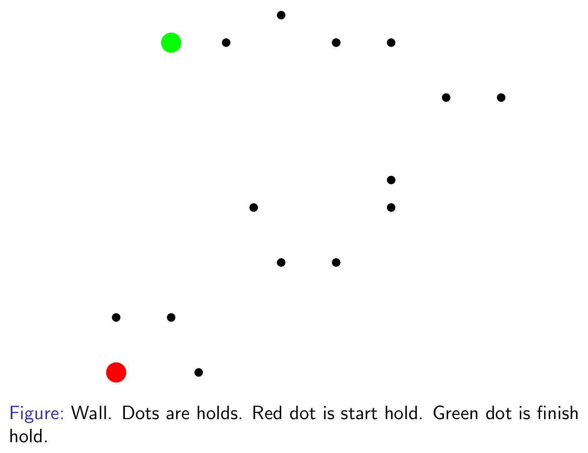
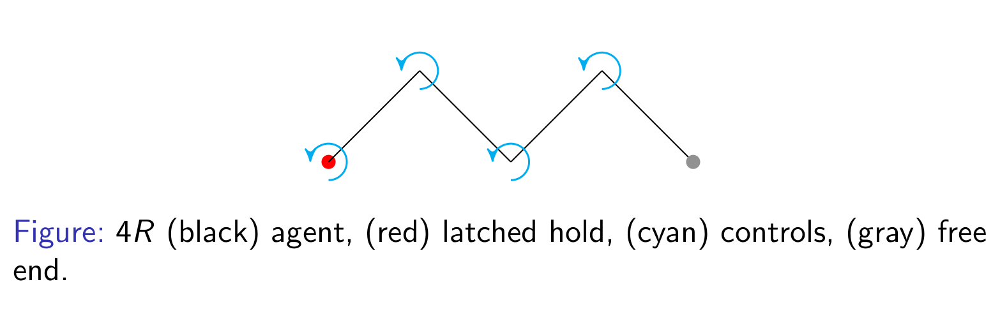
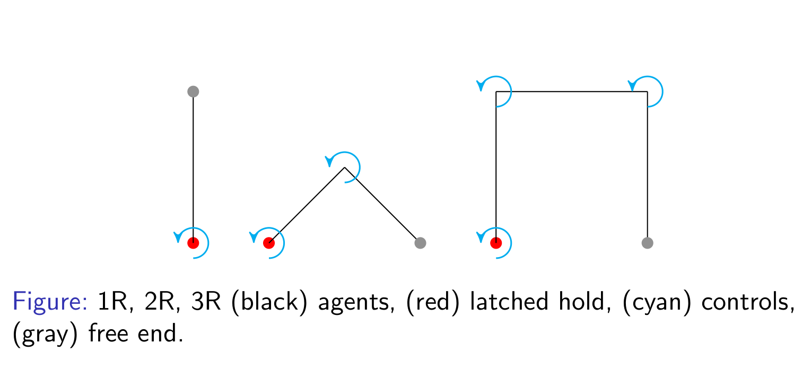
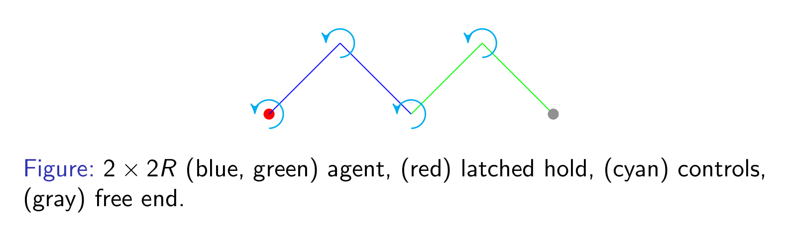
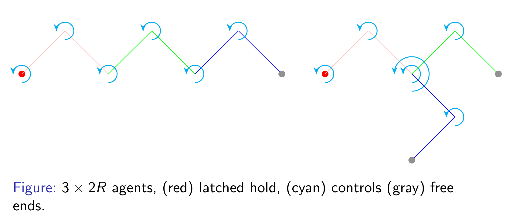
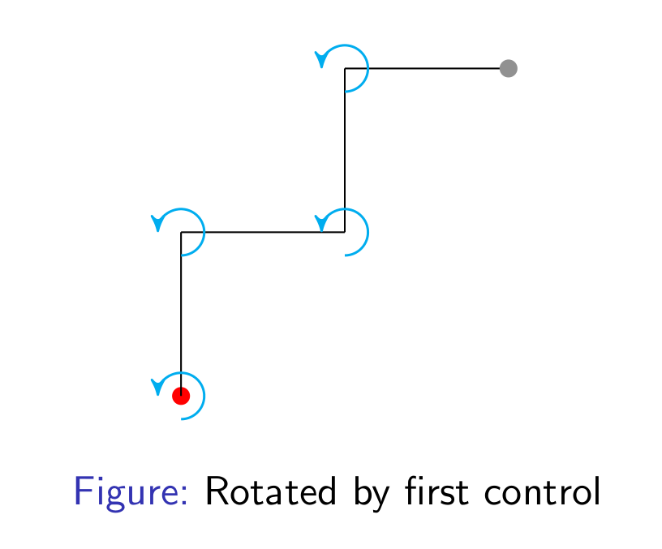
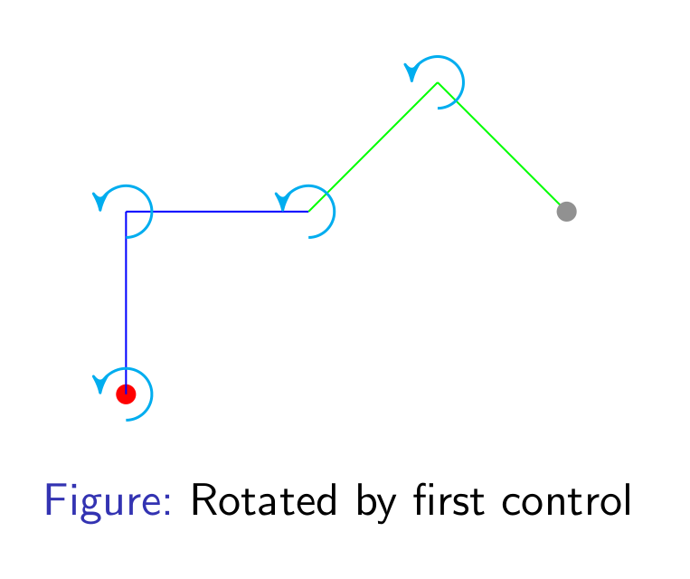

Motion planning for
2D
stick-figure
climbing agents
Created by
Yashasvi Sriram Patkuri
my intro, interests hobbies, project demo clips, climbing clips
the problem
the world
2D wall
points representing holds
has a start hold and a finish hold

chain agent
line segments connected via revolute joints
can be chained
one free end can latch to a hold in wall
controlled via joint angles
N line segments gives N "R" joints (including latch)

Other chains 
tree agent
chain agents in a tree structure
one free end of a chain agent can latch to a hold in wall
controlled via joint angles, but has hierarchical control

3 x 2R can be in two configurations, note the coincident controls and multiple free ends 
4R (chain)
2 x 2R (tree)
both translation and rotation is transferred down the chain
hierarchical control, only translation is transferred down the tree


the task
To plan the motion of an agent in realtime, so that it reaches the finish hold following the world rules
To make the motion natural (human/animal-like) using simple heuristics
the motivation
In games, this can be used to improve climbing character animation
As robots, they can climb difficult and challenging terrain for reconnaissance and rescue missions
Can generate new climbing routes and detect dangerous ones
Super fun to watch agents/robots climb walls